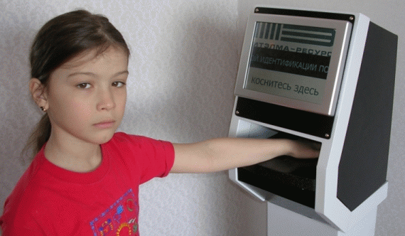
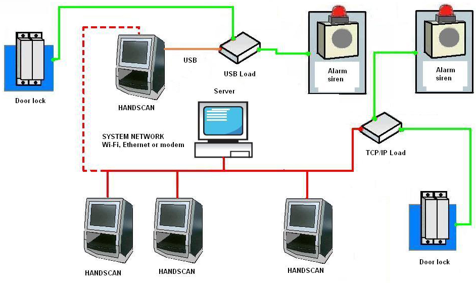
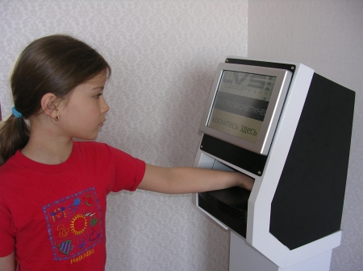
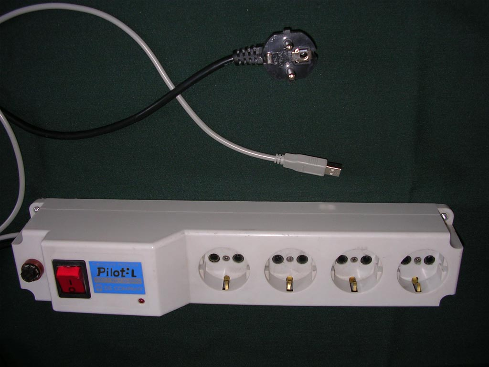
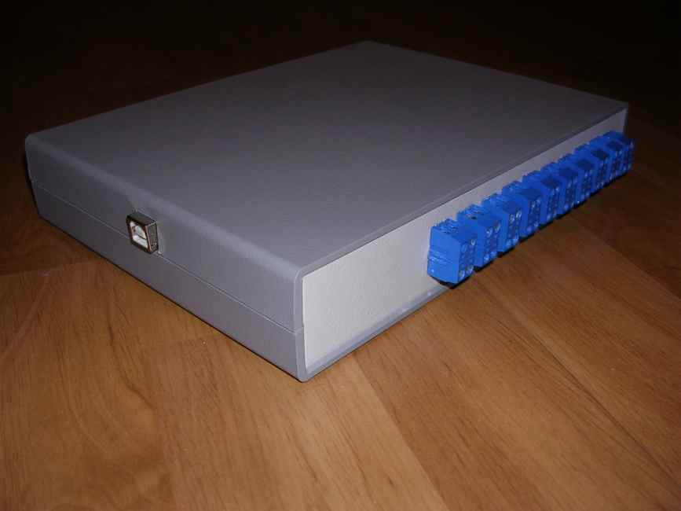
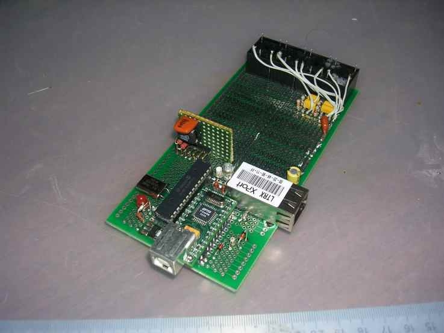

| Menu | Русский |
This method envisages compare between an incoming hand image and an archive hand model. An archive hand model is built in accordance with height, width and another parameters of a hand. A hand model record is made by hand scanning and further information averaging. In order to scan, the hand should be placed on the meassure pad. A verification process is executed by a special camera equiped with an infrared backlight. "Handscan" device received information about the hand dimensions. Scanned hand is converted to adigital image by an unique algorithm. After that compare is made between incoming hand image and archive hand model. In accordance with compare results system makes its decision.
"Handkey" system uses biometrical parameters of a hand by hand image receive and its further conversion. A hand image is received by built-in camera. This system has many disadvantages. It takes time for hand placing within calibrating pins on the measure pad. And thanks to static pins position, there are problems in case of too big or too small hand. The cameras used in "Handkey" have a low resolution. At last, "Handkey" is a consol device (it can't be a network resource) and its user interface is rather limited.
The new electronic system was developed by us. It uses the same method of biometrical identification. It was named "Handscan".

"Handscan" system is unique at this moment. All "Handkey" disadvantages were corrected. So user has a chance to place his hand as he wishes (with variable tilt angle of the fingers). "Handscan" is standard computer with all standard possibilities. It has a color monitor with a built-in touchscreen for user-friend (keyboard free) interface. "Handscan" is capable of working as a stand alone unit or as a network resource (with function of remote control and adminstration). It is workable on both wired/wireless basis, such as eithernet, Wi-Fi,GPRS, etc. It supports all client/server features, such as database replication, transactions, manual or automatic backup, remote administration. "Handscan" is capable of power device monitoring, such as lamps, electric engines, electric locks. An approximate network structure is shown below:

It is capable of additional device using, such as keyboard, additional monitor, printer, cardreader. "Handscan" is capable of hardware upgrade in accordance with the user requirements. Biometrical identification method is unique. The Handscan software is unique and workable with "Windows XP" operation system.

In this case, biometrical identification system would be too acceptable and suitable.In case of trouble (a hand damage or a hand size change) it is possible to register new hand image one more. If it is necessary to show an identification card, a hand biometry might be a "signature" of an identification card holder.
Intel Pentium M713, 1.1 GHz, ULV, 512 Cache, 1 GByte RAM manufactured by
Kontron
40 GByte Harddrive, 64 MByte Removable Flash Memory (CF)
LCD resolution: 800x600; Touchscreen: resistor-type

"Handscan" device could be equiped with the electronic unit, which is monitored by "Handscan" via USB. This unit contains 20 relay outputs with output current up to 1 A.

"Handscan" device could be equiped with the unpackeged electronic unit, which is monitored by "Handscan" via USB & TCP/IP. This unit contains relay outputs with output current up to 10 A.
